La pallavolo maschile italiana
La squadra
- Simone Giannelli - Capitano
-

- Data di nascita:
- Luogo:
- Bolzano
- Squadra:
- Sir Safety Susa Perugia
- Ruolo:
- Palleggiatore
- Altezza:
- 200 cm
- Maglia:
- 6
- Maglia in nazionale:
- 6
- Punti totali:
- 872
- Riconoscimenti:
-
- Nelle stagioni 2014/15, 2015/16, 2016/17 vince il premio "G. Badiali" (miglior U23 italiano della SuperLega)
- Miglior palleggiatore agli Europei 2015
- Miglior palleggiatore alla World League 2016
- MVP Europei 2021
- Miglior palleggiatore e MVP ai Mondiali 2022
- Note:
- Ha fatto parte della squadra “Itas Trentino” fino alla stagione 2020/21 e giocava con la maglia 9